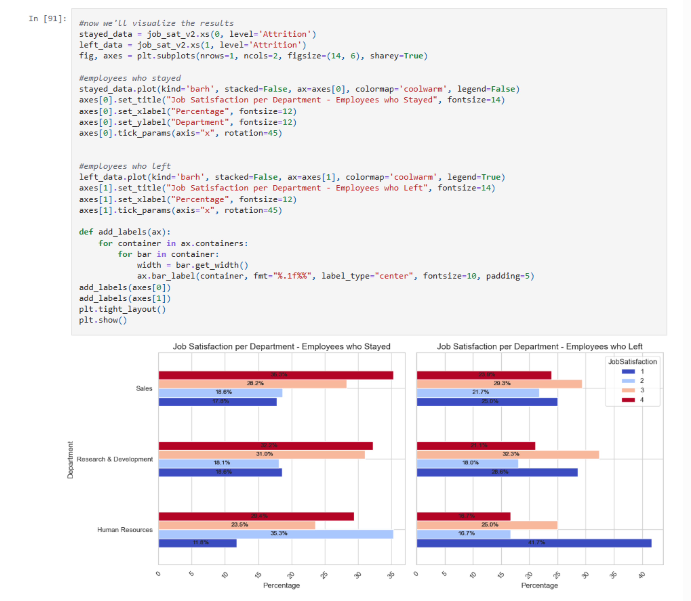
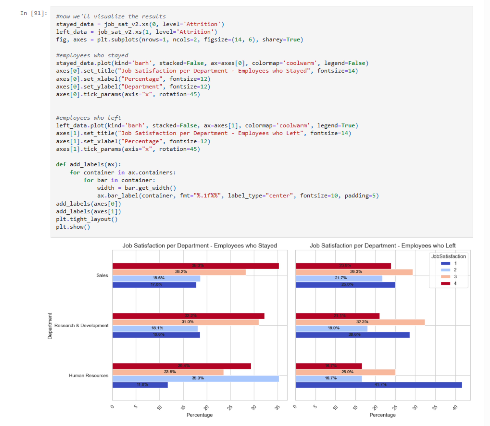
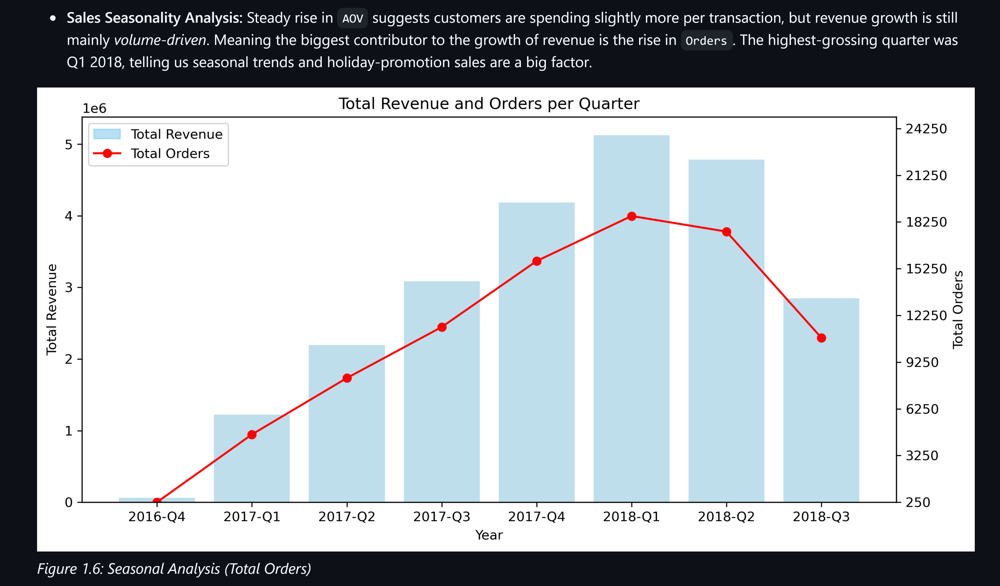
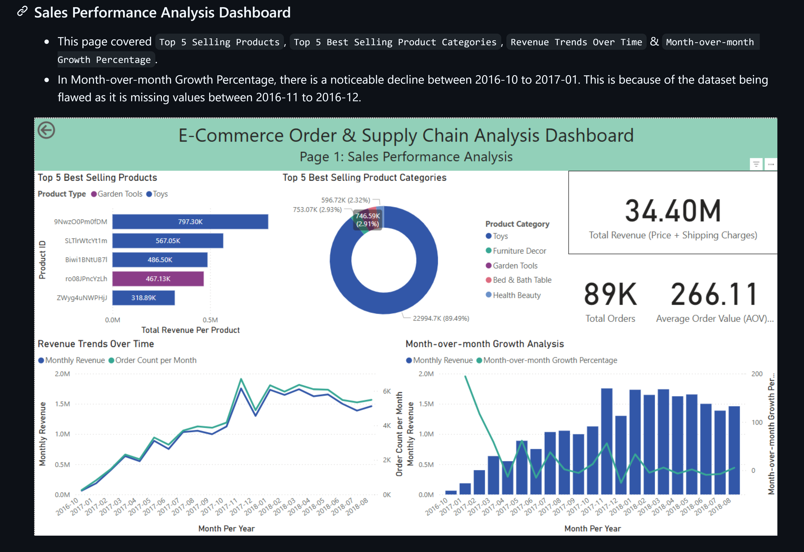
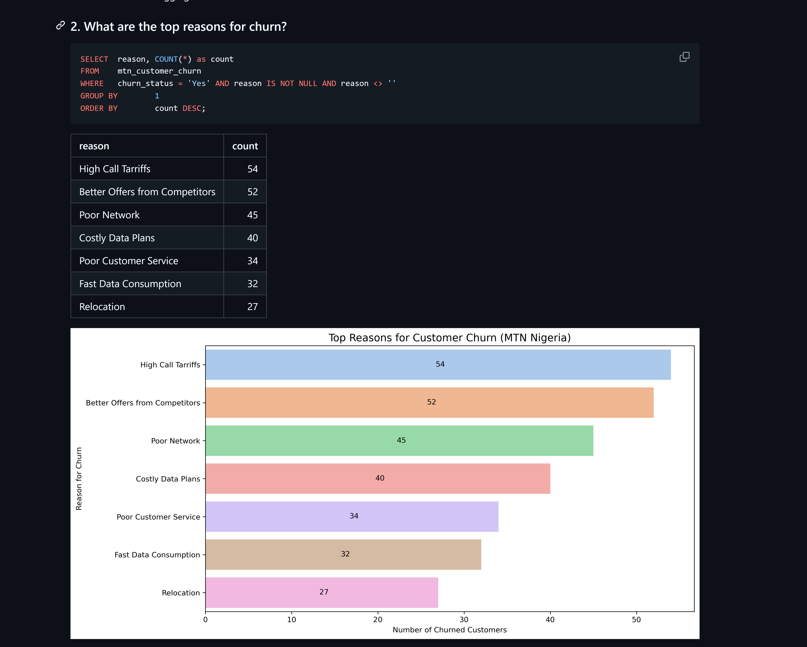

I'm a self-taught data analyst passionate about transforming raw data into meaningful business insights. With a foundation in SQL, Python (Pandas, Seaborn), Power BI, and spreadsheet tools like Excel and Google Sheets, I’ve built hands-on projects focused on: E-commerce Order & Supply Chain Analysis, Employee Attrition Exploratory Analysis, Movie Correlation and Power BI Data Visualizations.
 

Tools: Python, Pandas, Seaborn, Matplotlib, NumPy. Analyzed 1470 rows of employees to understand the patterns behind attrition in order to help business owners strengthen employee retention.

Tools: SQL, Pandas, Matplotlib, Seaborn. Uncovered key business insights on: Sales performance by category, product, and region, Delivery trends and logistics inefficiencies, Customer spending patterns and payment behavior.

Tools: Microsoft Power BI. Visualized my findings in E-Commerce Order & Supply Chain EDA to showcase my skills on Power BI.

Tools: Pandas(Jupyterlab), Seaborn, Matplotlib. In this project, we uncover MTN Nigeria's significant churn percentages in Q1 2025. Customer churn is a business phenomenon where customers suddenly stop relations on a certain business, much like to attrition.